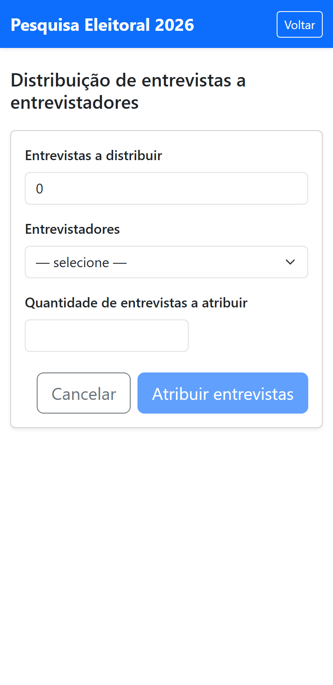

Parte 3 — Modo de operação
9. Distribuir entrevistas
Distribuir é repartir as entrevistas adquiridas entre os entrevistadores. Só depois de receber uma cota é que o entrevistador consegue aplicar entrevistas. No painel de gestão, toque em Distribuir entrevistas.

Passo a passo
- Se a pesquisa tiver segmentos, escolha o Segmento. O campo Entrevistas a distribuir mostra quantas ainda estão disponíveis nesse segmento.
- Escolha o Entrevistador na lista. O aplicativo mostra quantas entrevistas ele já realizou e quantas tem a realizar.
- Digite a Quantidade de entrevistas a atribuir.
- Toque em Atribuir entrevistas.
Você só pode atribuir um número inteiro e positivo, até o total a distribuir daquele segmento. A distribuição soma à cota do entrevistador — você pode distribuir mais vezes ao longo do trabalho.
Precisa tirar entrevistas de um entrevistador? Ao remover ou desabilitar pela tela de cadastro (§8), o saldo ainda não realizado volta para o “a distribuir” do segmento.